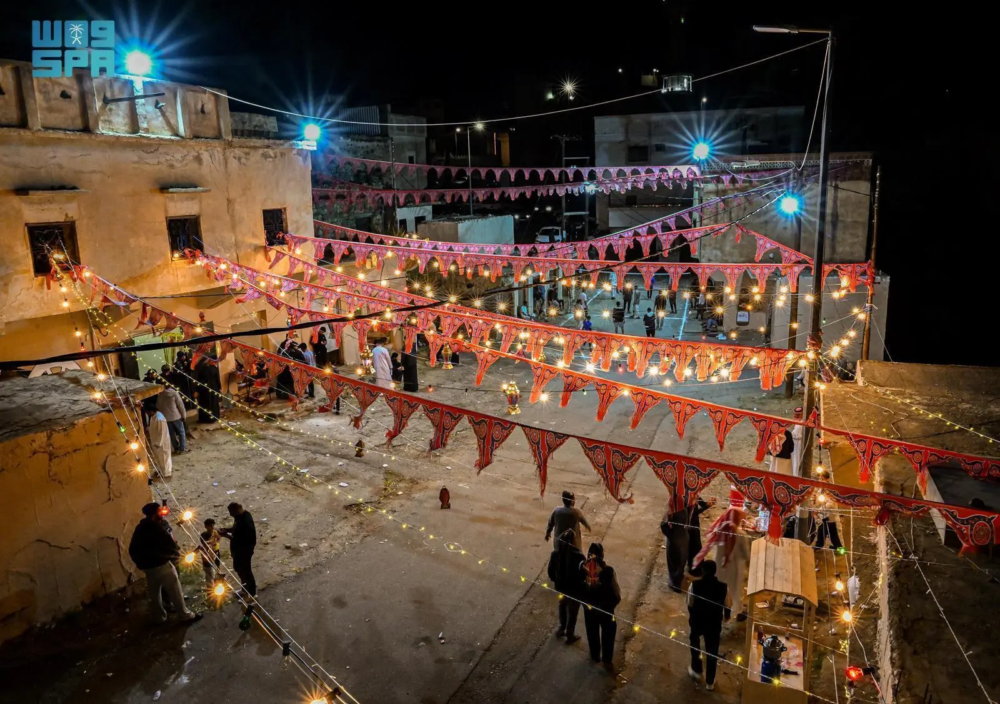

Restaurants & Shops in Al-Baha
Mandi Al-Jabal
Mandi Al-Jabal offers Mandi, a traditional dish that originated in the Hadramout region of Yemen. It later spread to the Tihama areas in the Kingdom of Saudi Arabia. The dish primarily consists of meat and rice, blended with a mix of spices, and is cooked in an underground pit. Mandi is widely consumed across most regions of the Arabian Peninsula. This restaurant enjoys widespread popularity in the Al-Baha region.
Sama Al-Nawras Restaurant
Sama Al-Nawras Restaurant offers a variety of fresh grilled and fried fish, caught daily from the Red Sea and prepared by skilled hands specializing in seafood cuisine. This restaurant is widely known and popular in the Tihama region of Al-Baha.
Thursday Market
The Thursday Market in Al-Baha is one of the most important and famous markets in the region. It features several sections catering to various needs, such as:
- Poultry Market: Offering various domestic birds including chickens, pigeons, calves, and wild rabbits.
- Crops Market: Selling locally grown fruits and vegetables like pomegranates, apricots, pears, grapes, almonds, and corn.
- Clothing and Gifts Market: Shops offering fabrics, jewelry, and gifts including fragrant plants like basil and kadi.
- Dates and Honey Market: Featuring pure local honey and a variety of dates.
- Traditional Jewelry Market: Showcasing antique ornaments and accessories.
- Agricultural Tools and Household Goods Section: Providing farming equipment and home supplies.
- Traditional Heritage Section: Displaying the region's cultural and historical heritage.
Sunday Market
Beyond its economic role, the Sunday Market holds cultural, social, and media significance. It has a deep historical legacy, as mentioned by the Swiss orientalist John Lewis Burckhardt in 1230 AH, who described it as "the official market of Ghamid." Over the past two centuries, the market has witnessed significant military, political, and social events, including the assassination of an Ottoman commander.